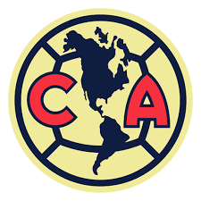

Club America
El Club de Fútbol América S. A. de C. V. es un equipo de fútbol profesional de la Primera División de México. Fue fundado el 12 de octubre de 1916 en la Ciudad de México por un grupo de estudiantes encabezados por el jugador Rafael Garza Gutiérrez y el profesor y entrenador Eugenio Cenoz. Disputa sus partidos como local en el Estadio Azteca, y los colores tradicionales del uniforme americanista son el amarillo y el azul.
Es la institución con el mayor número de campeonatos en todo tipo de competencias oficiales entre los clubes del fútbol mexicano, sumando un total de 36 (26 nacionales y 10 internacionales).
Es la institución con el mayor número de campeonatos en todo tipo de competencias oficiales entre los clubes del fútbol mexicano, sumando un total de 36 (26 nacionales y 10 internacionales).
Ostenta el primer lugar en campeonatos de liga de Primera División con 14 títulos ganados. Asimismo, ocupa la primera posición en la lista de clubes con más títulos nacionales de México con un total de veintiséis (catorce de Liga, seis de Copa México [máximo ganador] y seis de Campeón de Campeones). Es, junto al Club Deportivo Guadalajara, uno de los dos equipos que ha participado en todas las temporadas de Liga, desde 1943-44.
Con diez campeonatos, logra distinguirse como la escuadra perteneciente a la Concacaf, y en consecuencia el club mexicano, que acumula el mayor número de títulos internacionales en total: siete en la Liga de Campeones de la Concacaf (donde destaca como el máximo ganador), dos de la Copa Interamericana y uno de la Copa de Gigantes de la Concacaf. A su vez, ocupa el 9.º puesto a nivel mundial en cuanto a más títulos internacionales ganados. Su trayectoria de 29 participaciones en torneos internacionales, representa la cifra más alta para cualquier equipo mexicano.
Plantilla actual
A la fecha de realizar esta pagina, un ejemplo del 11 inicial de jugadores del club, basados en su último compromiso, son:
- L. Malagón
- K. Álvarez
- I. Reyes
- I. Lichnovsky
- C. Calderón
- A. Zendejas
- J. dos Dantos
- Álvaro Fidalgo
- J. Dilrosun
- J. Quiñones
- J. Rodríguez
Compromiso mas reciente
A la fecha de realizar esta pagina, el video de a continuacion presenta el mas reciente compromiso del Club America en la Liga MX:
Estadisticas recientes
A la fecha de realizar esta pagina, estas son algunas de las estadisticas del Club America en este actual torneo:
| PJ | G | E | P | GF | GC | DG | Pts |
|---|---|---|---|---|---|---|---|
| 7 | 4 | 2 | 1 | 9 | 3 | +6 | 14 |